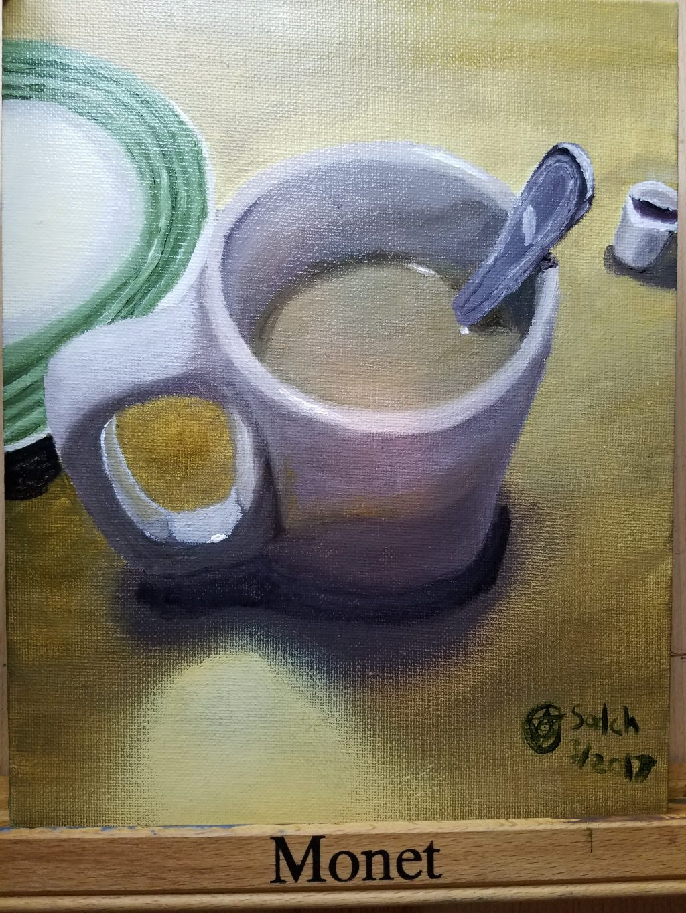

This entry was posted on March 7, 2017 at 11:27 pm. You can follow any responses to this entry through the RSS 2.0 feed. You can skip to the end and leave a response. Pinging is currently not allowed.
* Name
* Mail (private)
Website

Leave a Reply